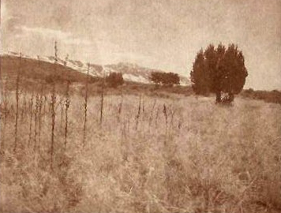
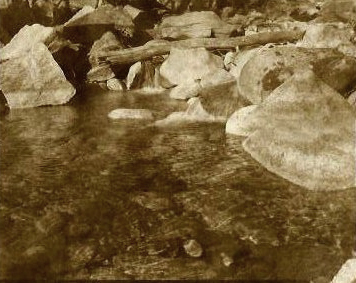
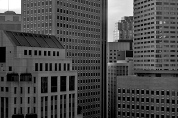

Photographic Processes: Four Different Techniques
June 19th, 2009 by Ray Dahl
- Salted Siver
- 
- The salted paper process was invented by William Henry Fox Talbot, known as The Father of Modern Photography, in 1833 while he was on his honey moon. He was the first to make a silver image on paper. On his first attempts paper coated with a silver nitrate solution and exposed to light only gave a faint metallic silver image. He later discovered that by first applying salt to the paper and then coating it with the silver nitrate solution he could get a much stronger image.
- Kallitype
- 
- The name Kallitype is made from the two Greek words, meaning beautiful and picture. In 1841 Henry Fox Talbot gave the name Calotype to his negative/positive salted paper process. The Kallitype process was invented much later by Dr. W. W. J. Nicol and dates back to 1889-1891 when he coated paper with a a ferric salt and silver nitrate solution and then exposed it through a negative and developed it.
- Cyanotype
- The basic cyanotype recipe has not changed very much since Sir John Herschel introduced it in 1842. However, some advances have been made by Mike Ware in what is referred to as the Cyanotype II process, or the New cyanotype process. Ware's cyanotype formula has less bleed, shorter exposure times and a longer density range than Herschel's, but it is also slightly more complicated to mix and uses more toxic chemicals.
- Modern Silver
- 
- All photography was originally monochrome, or black-and-white. Even after color film was readily available, black-and-white photography continued to dominate for decades, due to its lower cost and its "classic" photographic look. It is important to note that some monochromatic pictures are not always pure blacks and whites, but also contain other hues depending on the process.